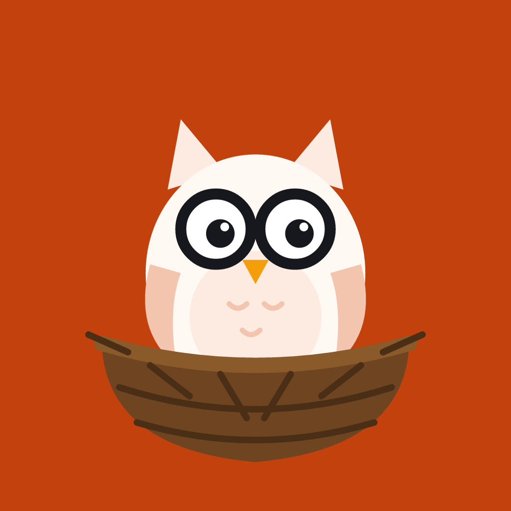

Nooks OwlChild Safety Standards
Last updated 7 November 2026
Nooks Owl has zero tolerance for child sexual abuse and exploitation (CSAE), including child sexual abuse material (CSAM). These standards apply to everything on Nooks Owl: profiles, photos, topics, comments, chat messages, voice notes and voice calls.
Adults only
Nooks Owl is only for people aged 18 and over. Everyone gives their birth year when they sign up, and we don't let anyone under 18 create an account. If we learn that an account belongs to someone under 18, we remove it.
What is never allowed
Any content or behaviour that sexualises, exploits, abuses or endangers children, including: sharing, requesting or linking to CSAM; grooming or trying to contact a minor; sexual comments about children; and any attempt to arrange contact with a child.
How we prevent and find it
A filter blocks sexual and abusive language in nicknames, bios, topics, comments and messages. Calls only start when both people agree, and people choose who can call them.
Every topic, chat, profile and call has a Report button, and people can block anyone. Our team is notified of every report and reviews it within 24 hours.
What we do
When we find CSAE content or behaviour, we remove the content, permanently ban the account, keep the evidence the law requires, and report it to the National Center for Missing & Exploited Children (NCMEC) and to the relevant local authorities, including law enforcement in India where applicable. We cooperate fully with law enforcement requests.
Report a concern
In the app, tap Report on the profile, message, topic or call. You can also email our child safety contact directly. If a child is in immediate danger, contact your local police first.